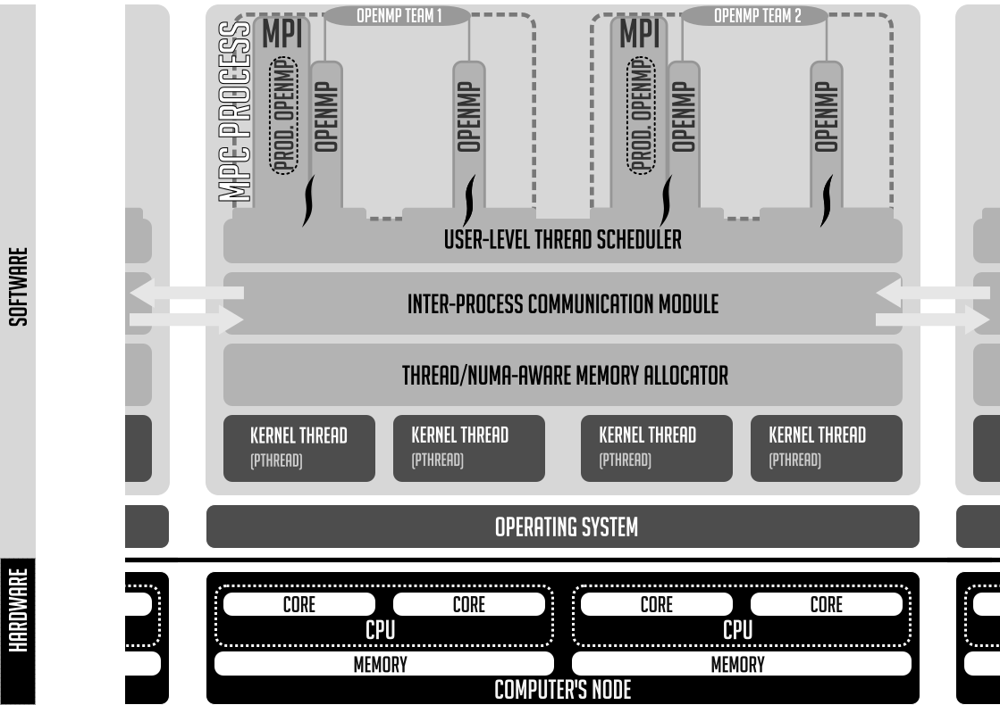

Runtime options
This is the plain man page of mpcrun. You can find this exact text using mpcrun -h.
Usage
mpcrun [option] [--] binary [user args]
Main options
mpcrun provides several options for configuring the launch process. These include:
|
Total number of nodes (default: 1) |
|
Total number of UNIX processes (default: 1) |
|
Total number of MPC tasks (default: 1) |
|
Number of cpus per UNIX process (default: 1) |
|
Number of cpus per MPC tasks |
|
Enable SMT capabilities (disabled by default) |
|
Use mpmd mode (replaces binary) |
You can see the hierarchy of tasks and processes in mpc runtime :

MPC execution model as described in this paper
Traditionally, an MPC program is launched using a combination of -N, -n and -c.
For example mpcrun -N 4 -p 8 -n 16 ./my_mpi_app launches my_mpi_app with 4 nodes, each having 2 processes, and each process running 4 tasks.
Warning
The -p option is specific to thread-based. It will have no effect if used with MPC compiled in process-mode.
Multithreading
|
Define underlying threading engine |
- The most common modes are
pthread Use POSIX threads to ensure multithreading
ethread_mxn Use MPC own user level threading engine
ethread Use MPC own user level threading engine for debug purposes (only one thread at a time)
Network
|
Define Network mode |
Using the help command, the available networks configuration should be displayed as follow
Configured CLI switches for network configurations (default: tcpshm):
- shm:
* tbsmmpi
* shmmpi
- verbsshm:
* tbsmmpi
* shmmpi
* verbsofirail
- verbs:
* tbsmmpi
* verbsofirail
Launcher
|
Define launcher |
Using the help command, the available launchers should be displayed as follow
Available launch methods (default is srun):
- none
- none_mpc-gdb
- salloc_hydra
- srun
|
Launcher specific options |
|
Print available launch methods |
|
Configuration file to load |
|
List of profiles to enable in config |
Note
The --opt option is used to pass through options to the underlying launcher.
It is commonly used to specify the wanted partition to slurm
mpcrun -N=2 -n=2 --opt="-p <partition>" -- ./a.out
Information
|
Display this help |
|
Display command line |
|
Verbose mode (level 1 to 3) |
|
Verbose level 1 |
|
Output a xml file of thread placement and topology for each compute node |
|
Output a txt file of thread placement and topology for each compute node |
- The verbose level are defined as such
Level 1 (v): Show basic information about the launched process
Level 2 (vv): Show logs information about the launched process
Level 3 (vvv): Show very detailed debug information about the launched process
Debugger
mpcrun provides options for configuring the debugger:
|
to use a debugger |
You can also launch your binaries as such if you want to keep the UNIX process outputs separate :
mpcrun -n=2 -p=2 xterm -hold -e gdb -ex r ./my_mpi_app